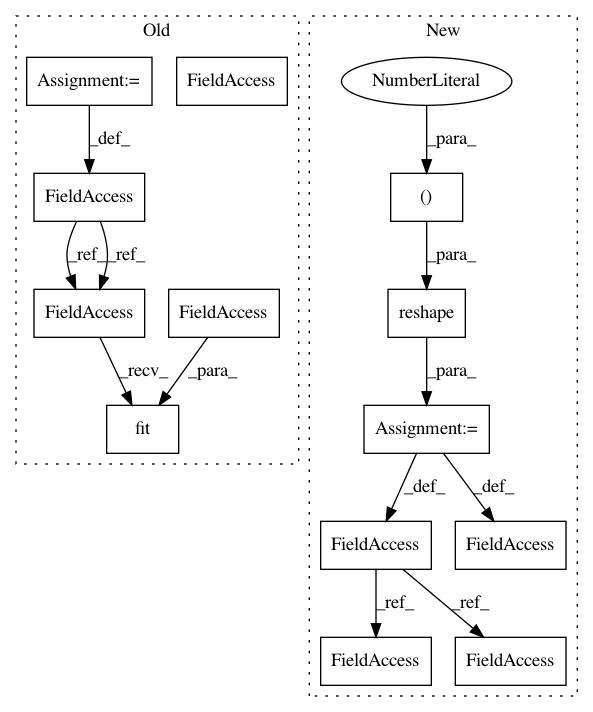

d14ad44d0f425c04be5a6cdca13fc513fba53843,test_models_train.py,,,#,11
Before Change
if __name__ == "__main__":
network_inputs = np.random.uniform(size=(3, 16, 16, 1))
model = convolutional_model(input_shapes=list(network_inputs[0].shape),
num_frames=len(network_inputs))
model.compile(optimizer="adam",
loss=deep_speaker_loss,
metrics=["accuracy"])
inputs = list(np.expand_dims(network_inputs, axis=1))
model.fit(inputs, np.expand_dims([0] * len(inputs), axis=1))
print(model.summary())
After Change
if __name__ == "__main__":
network_inputs = np.random.uniform(size=(BATCH_SIZE, NUM_FRAMES, 16, 16, 1))
model = convolutional_model(batch_input_shape=(BATCH_SIZE * NUM_FRAMES, 16, 16, 1))
model.compile(optimizer="adam",
loss="mse",
metrics=["accuracy"])
network_inputs = np.reshape(network_inputs, (-1, 16, 16, 1))
output = model.predict(network_inputs)
// stub_targets = np.expand_dims([0] * BATCH_SIZE * NUM_FRAMES, axis=1)
stub_targets = np.random.uniform(size=(BATCH_SIZE * NUM_FRAMES, 512))
print(model.train_on_batch(network_inputs, stub_targets))
// from triplet_loss import deep_speaker_loss
In pattern: SUPERPATTERN
Frequency: 3
Non-data size: 13
Instances
Project Name: philipperemy/deep-speaker
Commit Name: d14ad44d0f425c04be5a6cdca13fc513fba53843
Time: 2017-06-12
Author: premy@reactive.co.jp
File Name: test_models_train.py
Class Name:
Method Name:
Project Name: jhfjhfj1/autokeras
Commit Name: b115f1f721594772ca12e02dc388b1b210a2ee73
Time: 2018-05-02
Author: jin@tamu.edu
File Name: experiments/mnist.py
Class Name:
Method Name:
Project Name: philipperemy/deep-speaker
Commit Name: d14ad44d0f425c04be5a6cdca13fc513fba53843
Time: 2017-06-12
Author: premy@reactive.co.jp
File Name: test_models_train.py
Class Name:
Method Name: